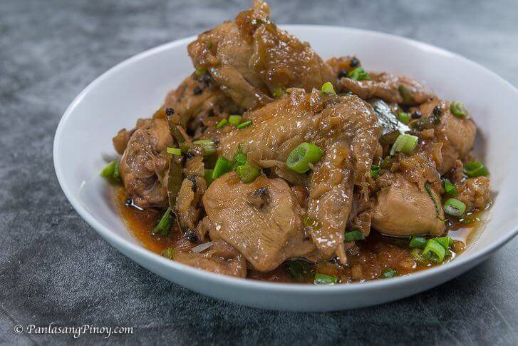

Adobong Manok

Adobong manok is a traditional Filipino dish made with chicken that is marinated in a mixture of
vinegar, soy sauce, and spices. The chicken is cooked over medium heat until tender and served with
the savory marinade sauce. The dish is known for its tangy, savory flavor and is often served
with rice and vegetables. Adobong manok is a common choice for special occasions and celebrations
in the Philippines. It is easy to prepare and can be made with a variety of chicken cuts,
including breasts or thighs. The marinade can also be adjusted to suit individual tastes,
with the addition of ingredients such as onions, green onions,
or red pepper flakes.
Ingredients
- 1 pound boneless, skinless chicken skin breasts or thighs
- 1/2 cup white vinegar
- 1/4 cup soy sauce
- 4 cloves garlic, minced
- 1 teaspoon whole peppercorns
- 1 bay leaf
- 1 teaspoon sugar
- salt, to taste
Steps
-
In a large mixing bowl, combine the vinegar,
soy sauce, garlic, peppercorns, bay leaf, and sugar.
Mix well to combine.
-
Add the chicken to the marinade and toss to coat.
Cover the bowl with plastic wrap and refrigerate for at least 2 hours or overnight.
-
Heat the oil in a large pan or wok over medium heat.
Remove the chicken from the marinade, reserving the marinade,
and add it to the pan.
-
Cook the chicken for 5-7 minutes on each side,
or until it is cooked through and the internal temperature reaches 165°F (74°C).
-
Add the reserved marinade to the pan and bring it to a boil.
Reduce the heat to low and simmer for 5 minutes,
or until the sauce has thickened slightly.
-
Season the chicken and sauce with salt to taste.
Serve the adobong manok with rice and vegetables on the side.
Enjoy!